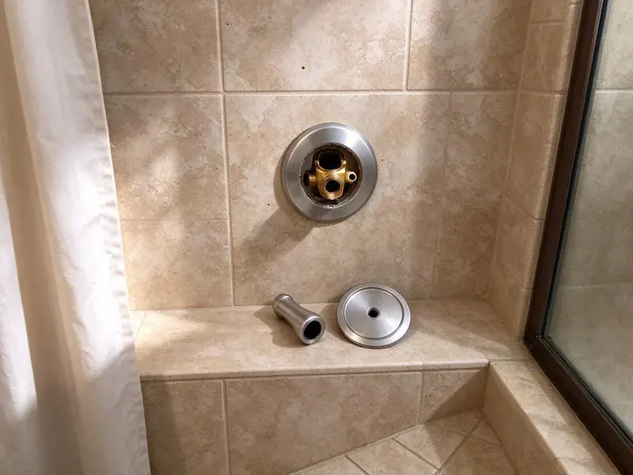

Urinal Installation in Sun Valley, NV
For reliable urinal installation services in Sun Valley, NV, look no further than FMR Plumbing. We handle all types of urinal setups with care.
- Fast, reliable service
- ADA Height Installs
- Licensed Nevada plumbers
- Prompt, reliable service

Expert Urinal Setup in Sun Valley, NV.
We handle drains, supply and flush valves so your restroom works from the first day.
Code-Compliant Urinal Installation for Every Restroom in Sun Valley, NV
FMR Plumbing specializes in complete urinal installation services for businesses and homes across Sun Valley, NV. Whether you are upgrading an old unit, renovating a commercial restroom, or adding a new fixture, our skilled plumbers deliver a proper, leak-free setup.
Our expertise includes:
- Set wall carriers and blocking for wall-hung urinals
- Water-efficient urinal models
- Commercial grade urinal setups

Additional Bathroom Plumbing Services in Sun Valley, NV
From toilets to showers, our bathroom plumbing team in Sun Valley, NV handles repairs, installs, and upgrades with tidy, code-compliant work.


Customers
Why Choose FMR Plumbing for Urinal Installation in Sun Valley, NV?
Choosing the right professionals for urinal installation ensures your system functions properly and meets all local Nevada plumbing codes. Our team has broad experience with the demands of these fixtures.
- Durable Setup, We use high-quality mounting hardware and sealant materials to make sure your urinal is securely fastened and leak-proof for years to come.
- Water Savings, Low-flow and waterless options cut water use in busy restrooms.
- Cleanliness, Proper installation prevents common issues like splashing and odor, maintaining a hygienic environment.
Citywide Coverage
Our team covers all of Sun Valley for new installs, replacements and tenant improvements. We coordinate with general contractors and landlords to stay on your timeline.
Experienced Team
Our plumbing team has extensive experience with all types of urinal installations, from standard wall-hung models to more complex trough urinals. They are trained in the latest techniques and equipped with the right tools to get the job done quickly and correctly.
Safety-First Approach
We secure every fixture to a rated carrier or solid blocking so it cannot pull away from the wall. Supply lines include a vacuum breaker on flushometers to protect the drinking water.
Trusted Certified Sun Valley Plumbing Services Professionals
At FMR Plumbing, we take pride in providing certified plumbing services throughout Sun Valley, NV. Backed by recognized industry credentials, our experienced plumbers combine technical skill with genuine customer care. Whether it is repair, installation, or maintenance, we follow strict safety and quality standards to deliver lasting results you can trust.
Call Us Now PHCC Plumbing Contractor Recognition
PHCC Plumbing Contractor Recognition Better Business Bureau (BBB) Accreditation
Better Business Bureau (BBB) Accreditation Angi Certified Pro
Angi Certified Pro ISO 9001 Quality Management Certification
ISO 9001 Quality Management CertificationProfessional Urinal Installation Services in Sun Valley, NV
ADA Urinal Installation in Sun Valley
Accessible urinals must have the rim no higher than 17 inches above the floor and enough clear floor space in front. We set the carrier and fixture to meet these rules and place the flush control within reach. This is essential for public restrooms and new construction. We review the layout before setting the fixture.

American Standard Urinal Installation in Sun Valley
FMR Plumbing proudly installs American Standard urinals in Sun Valley properties. American Standard offers a wide range of designs, from standard washdown models to high-efficiency units. Our team makes sure that each American Standard urinal is mounted securely, with precise water supply and drain connections. We handle all aspects, from bolt-down to sealing, providing a reliable and attractive installation for your restroom.
Urinal Brands We Install in Sun Valley, NV
FMR Plumbing has experience installing a wide range of popular urinal brands, including American Standard, Kohler, Zurn, Sloan, and Toto. We are familiar with the specific installation requirements and components of each manufacturer. Whether you have a preferred brand or need guidance on selecting the best urinal for your needs in Sun Valley, NV, our team can provide honest advice and professional installation.
Urinal Replacement and Upgrades in Sun Valley, NV
Older urinals often use 1 gallon or more per flush and have cracked or stained bowls. We remove the old fixture, inspect the waste outlet and carrier, and install a modern low-flow model. Sometimes the old carrier can be reused, which reduces cost. Upgrading also improves restroom appearance and odor control.
Urinal Installation Cost Factors in Sun Valley, NV
Costs depend on the fixture type, whether a carrier is needed, and how far the drain and supply must run. Sensor valves cost more than manual valves, and waterless urinals have higher upfront prices but save water over time. Replacements using existing lines are the least expensive. We provide a detailed quote that shows each cost.
Waterless Urinal Installation in Sun Valley
Waterless urinals are an excellent choice for businesses and institutions in Sun Valley looking to conserve water and reduce utility bills. FMR Plumbing is skilled at the installation of various waterless urinal brands, ensuring proper sealant cartridge setup and drain line connection. These systems require precise installation to prevent odors and maintain hygiene, which our experts handle with care.
Urinal Rough-In and New Restroom Plumbing in Sun Valley
For new restrooms or tenant improvements, we rough in the waste, vent and supply lines before walls are closed. We set the outlet height and spacing to the fixture's spec sheet and inspection requirements. Planning ahead avoids costly wall rework later. We coordinate with your contractor on the schedule.

Compliance & Permits for Urinals in Sun Valley, NV
Proper urinal installation in Sun Valley, NV often calls for adherence to local building codes and, for significant commercial projects, permits. FMR Plumbing stays current with all Nevada and Sun Valley plumbing regulations. We ensure that your installation meets all necessary compliance standards, including ADA accessibility requirements where applicable. We can also guide you through any permit processes, making sure your project is fully legitimate.
Trusted Urinal Installation Near Me in Sun Valley, NV
When you search for 'urinal installation near me' in Sun Valley, NV, FMR Plumbing is your reliable local partner. Our team is strategically located to provide prompt and efficient service throughout the entire Sun Valley area. We understand the urgency of commercial plumbing needs and aim to respond promptly.
Our crews know local permit processes and inspection expectations for commercial restrooms. That speeds up approval for new fixtures and remodels. You get one team for planning, installation and the final test.
FMR Plumbing at a Glance
- Licensed and insured plumbers serving Sun Valley, NV
- Same-day appointments and 24/7 emergency response
- Upfront, flat-rate pricing before work begins
- 4.8-star rated by 903+ Nevada customers
Sun Valley Map
Sun Valley Information
- Population
- 21,178
- Area codes
- Local
- Service area
- Sun Valley and communities within 40 miles
- Nearby
- Sparks, Reno, Fernley, Carson
Water in much of Nevada is very hard, and scale buildup is one of the most common reasons water heaters and fixtures fail early. Proper urinal installation in Sun Valley, NV provides efficient drainage and keeps mineral buildup from affecting long-term performance.
Expert Services
Trust our professionals for reliable FMR Plumbing solutions in Sun Valley, NV.
Our Specialized Plumbing Services in Sun Valley, NV
At FMR Plumbing, we provide a complete range of plumbing services across Sun Valley, NV. From leak detection to full system installations, our team ensures fast, precise, and affordable service for both residential and commercial properties. Explore our core services below:


How Our Urinal Installation Process Works in Sun Valley, NV
Here is how we take your project from quote to a working fixture.
Request a Quote
Contact FMR Plumbing today at (725) 360-1766 to discuss your urinal installation needs. We'll gather details about your project and provide a clear, upfront estimate.
Site Assessment
Our plumber will visit your Sun Valley property to assess the site, confirm plumbing connections, and finalize the scope of work. We'll address any specific challenges or requirements.
Professional Install
We meticulously install your new urinal, connecting water supply and drain lines and ensuring secure mounting. Our team performs thorough testing for leaks and proper function.
Frequently Asked Questions About Urinal Installation in Sun Valley
The cost for urinal installation in Sun Valley, NV can range from $400 to $1,200, depending on the type of urinal, complexity of plumbing modifications, and whether it's a new installation or a replacement. This price typically includes labor and basic materials, but highly specialized units or extensive rough-in work can increase the overall cost.
While it might seem like a way to save money, urinal installation involves precise plumbing connections, proper venting, and secure mounting that are best handled by a professional. Incorrect installation can lead to leaks, odors, and expensive repairs down the line, making professional service a worthwhile investment.
New urinals and restroom changes usually require a plumbing permit. Simple like-for-like replacements usually do not, and we will confirm with your local building department.
Yes, it is possible to install a urinal in a home in Sun Valley, though it's less common than in commercial settings. Considerations include available space, existing plumbing, and ventilation. Our plumbers can assess your home to determine feasibility and recommend suitable residential models.
Yes. Home urinals are common in garages and busy bathrooms. We tie into existing drain and vent lines whenever we can.
Flush urinals use a water flush to remove waste, while waterless urinals use a specialized trap system with a sealant liquid to prevent odors without water. Waterless urinals offer major water savings but require specific maintenance for their sealant cartridges. Both types offer effective waste removal.
We install American Standard, Kohler, Toto, Sloan, Zurn and Falcon waterless fixtures. We can help match a brand to your budget and traffic.
Most standard urinal installations or replacements can be done within 2 to 4 hours. However, if new plumbing lines need to be run, or if there are significant structural modifications required, the process could take a full day or more.
What People Are Saying About Our Plumbing Experts?

Daniel K.
A pipe burst at 11 pm and they actually answered. The plumber showed up within the hour, shut everything down, and had us back to normal the next morning. Could not ask for more.
Emergency Plumbing · Carson, NV
Patricia H.
We had a slab leak that two other companies could not find. FMR Plumbing located it in under an hour, explained our options, and the price matched the quote to the dollar.
Slab Leak Repair · Carson, NV
Laura S.
I scheduled a water heater replacement, and the team made the process smooth and affordable. The new unit works perfectly, and they cleaned up after completing the job.
Water Heater Replacement · Sun Valley, NV
Robert G.
The trenchless sewer replacement saved our front yard. They walked us through the camera inspection footage first so we knew exactly what we were paying for.
Sewer Line Replacement · Fernley, NVJames P.
Our commercial plumbing system had a leak under the sink, and FMR Plumbing handled it professionally. The plumbers arrived quickly and restored everything without disruption to our customers.
Commercial Plumbing · Sparks, NV
Mark T.
When our office needed drain cleaning, FMR Plumbing provided quick, reliable service. The plumber arrived on time and made sure every drain flowed perfectly before leaving. Very satisfied.
Drain Cleaning · Fernley, NV